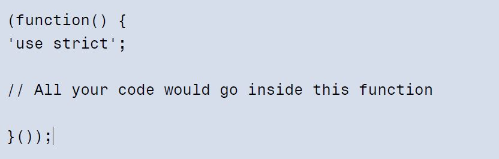
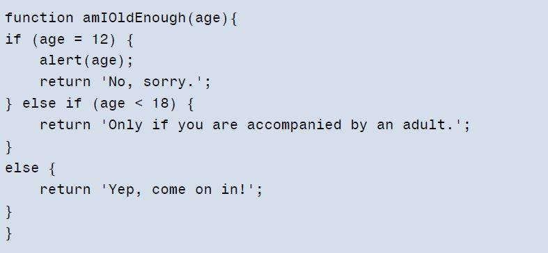
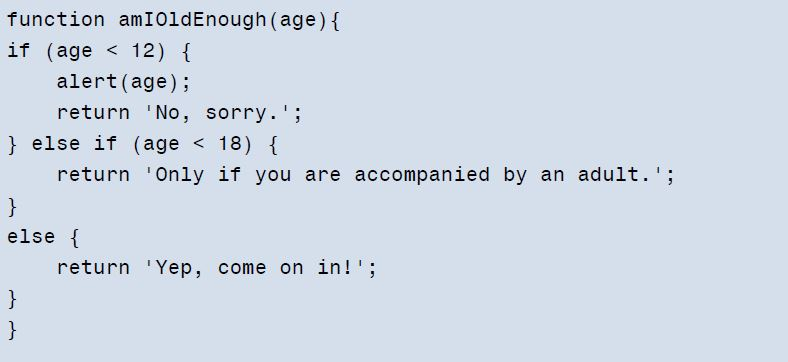
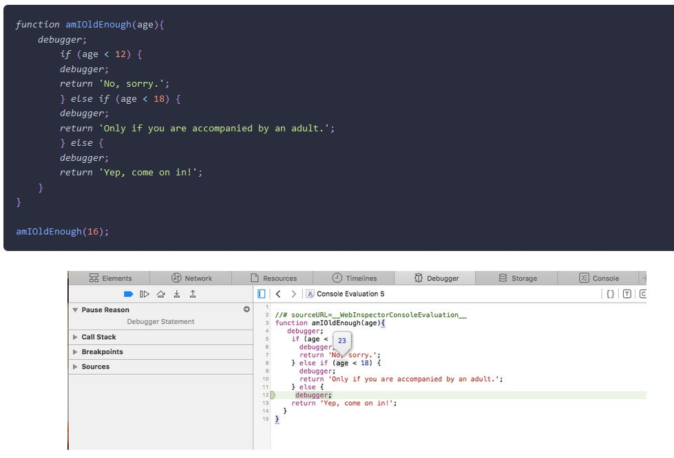
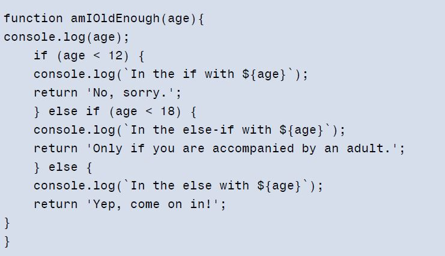

WDD 330: Portfolio Week 5
My Notes: Chapter 10: Testing and Debugging
Debugging and testing, tools and tips
The Importance of Testing and Debugging
I learned how important it is to test and debug errors with JavaScript. I also found that as a programmer, I should make sure that the code I write responds and that if there is any error, it can be identified and fixed quickly. Therefore, I need to be aware of the exceptions, if possibly catch and fix them. Failing to do so makes errors difficult to track down.
-
Strict Mode
Since it’s much better to spot errors early on, rather than have them cause problems later. Writing code in strict mode can also help improve its clarity and speed.
The recommended way to invoke strict mode is to place all your code into a self-invoking function:
-
'use strict' To enter in strict mode, you will need to enter the following string line in a JavaScript file:
Feature Detection
-
The recommended way to determine browser support for a feature is to use feature detection.
Debugging in the Browser
Debugging is the process of finding out where bugs occur in the code and then dealing with them.
-
Alert() method is the most basic form of debugging.
The example below checks to see if a person’s age is appropriate:
 -
ifBlock is used to see the correct value of the age variable, the alert method has to be inside the if block.method is the most basic form of debugging.
To check for equality, we should use === instead of = which assigns a value to a variable (eveninside an if block).
For all values of age that are less than 12, we could update the code as follows:

Debugging Tool
One of the most useful commands is the debugger keyword.
Using the Console
-
A console object does provide a number of methods for logging information and debugging.
Example of console with the age variable

Error Objects
An error object can be created by the host environment when an exception occurs, or it can be created in the code using a constructor function, like so:
const error = new Error();
//This constructor function takes a parameter that’s used as the error message:
const error = new Error('Oops, something went wrong');
The seven other error objects used for specific errors:
- Eval Error is not used in the current ECMAScript specification and only retained for backward compatibility. It was used to identify errors when using the global eval()function.
- Range Error is thrown when a number is outside an allowable range of values.
- Reference Error is thrown when a reference is made to an item that doesn’t exist. For example, calling a function that hasn't been defined.
- Syntax Error is thrown when there’s an error in the code’s syntax.
- Type Error is thrown when there’s an error in the type of value used; for example, a string is used when a number is expected.
- URI Error is thrown when there’s a problem encoding or decoding the URI.
- Internal Error is a non-standard error that is thrown when an error occurs in the JavaScript engine. A common cause of this too much recursion.
//These error objects can also be used as constructors to create custom error objects:
const error = new TypeError('You need to use numbers in this function');
Exception Handling
We can handle exceptions by using the try,catch, and finally
If we suspect a piece of code will result in an exception, we can wrap it in a try block.
This will run the code inside the block as normal, but if an exception occurs it will pass the error object that is thrown onto a catch block
function imaginarySquareRoot(number) {
'use strict';
try { // <--- we put the try here
return String(squareRoot(number));
} catch(error) { // <--- catch error below
return squareRoot(-number)+'i';
}
}
Other practical resource with more info:
- Testing in JavaScript:
How to test better in JavaScript
Team Activity & Ninja Quiz Practice
Click in the links below to find this week team activity and practice exercise.
Quiz ninja startWeek 05 Team Activity
Question:
- What is function overloading in JavaScript?
- Should static method only be used when working with classes?